GitHub初心者が「チーム開発」を意識して一人で練習した話。
2026-1-04

「Git?GitHub?なんだそれ。プログラム書けるようになりたいんだったらコードだけ書いてりゃいいんじゃないの？」
私にもそう思っている時期がありました。しかし、試しに利用してみると、必須レベルで重要な知識、スキルだということが理解できました。
ここでは、Git/GitHub初心者、web開発初心者の私が行ったことを追体験できるように記事にまとめてみました。
「GitHubちょっとやってみようかな。」と思っている初心者の方の手助けになれば幸いです。
1.Git/GitHubとは
Gitとは、ソースコードやファイルの変更管理をするためのツールです。
いつ、誰が、どのファイルをどのように変更したのかを記録できます。
一方GitHubとは、Gitで管理しているデータをインターネットで共有できるサービスです。
まとめると、
- Gitは、「履歴管理を行うツール」
- GitHubは「Gitの履歴を共有し、チームで開発するためのサービス」
「一人で開発するなら、”GitHub”は必要ないのでは？」と思いますよね。
確かに、単純にプログラミング言語を学びたいと思うだけなら、そこまでやる必要はないかもしれません。 しかし、
- web系の会社であれば就職後はGitHubを利用したチーム開発が前提であることが多い。
- GitHubに記録を残すことで、就活中のポートフォリオになる。
(さらに言うと、私はポートフォリオを掲載するようなオリジナルサイトを制作することが良いと考えますが、 それは別の記事にしておりますので、気になる方はそちらをご覧ください。→ HTML/CSSでシンプルブログを作る)
2.大まかな流れ
初めに、Git/GitHubではどのようなことが行われているのかをざっくり説明します。以下のような流れです。
- ローカル作業（ローカルリポジトリ）
- ステージング
- コミット
- プッシュ
- プルリクエスト
- マージ
- プル
2-1.ローカル作業
まずは、自分のパソコン上でコードを書いたり、ファイルを編集したりします。 この時点ではまだ、GitやGitHubによる管理は行われていません。 html,css,JavaScriptなどのファイルを作ったり、READMEなどを書いたりします。
2-2.ステージング
「2-1.ローカル作業」で変更した内容のうち、
あなたは自分で作ったハンドメイドの商品を倉庫に郵送します。今回は靴下や、Tシャツ、上着を作っていますが、今回はTシャツだけ送りたい、靴下や上着は次回にすることにしました。 その際、間違って靴下や上着を送らないようにTシャツだけを玄関に置いておきました。
この例で言うと、「靴下」が記録したいデータ、靴下を玄関へ持っていくことを「ステージング」と言います。
ステージングを行うことで以下のメリットがあります。
- 途中の不要な変更を含めずに済む。
- 意図した単位で履歴を残せる。
2-3.コミット
コミットとは、ステージングした変更を
先ほどの郵送の例で例えるなら、「箱を閉じて、封をして、内容を書いた伝票を張る」という作業のようなものです。
中身は確定し、「何を送ったのか」分かる状態になります。さらに言うとこの箱は"改変不可"の状態になります。
ここまではまだ自分のパソコンに記録されるだけで、他の人からは見えません。
このように、GitHubで共有するためのファイルを保存している場所を
2-4.プッシュ
プッシュとは、ローカルリポジトリにあるコミットを
先ほどの例で言うと、郵送し、倉庫へ搬入されるといったイメージです。
ここで、ようやく「他の人から見られる」状態になり、他の人もその変更を取得できる状態になります。
また、GitHubにあるファイルの保存場所のことを
2-5.プルリクエスト
プルリクエストとは、
開発者がそれぞれローカルで作成したものを、誰も確認することなくどんどん共同で作っている制作物につけ足していったら、よくわからないものが出来上がりそうです。
そこで大切なのがプルリクエストです。変更した内容を説明し、問題が無いか確認してもらうために必要な仕組みです。
先ほどの例で言うと、倉庫を管理している人全員に荷物の内容を書いた手紙を送り、荷物を受け取ってもらえるようにお願いをするといった感じです。
つまりこの段階では、倉庫に荷物は入っていないのです。
2-6.マージ
マージとはプルリクエストを承認し、
また、"共同で開発している制作物"のことを
この記事を読んでいる方は基本的に一人で開発を行う人が多いと思うので注意が必要なのですが、 チーム開発において「マージ」は基本的には自分では行わないということは頭に入れておいてほしいと思います。
このマージという作業は本流に変更を決定させる非常に重要な役割を担っています。なので、基本的にはレビュー担当者やリーダーがマージを行うことが多いです。
一人開発では自分でマージしますが、「本来はレビュー後にマージされるもの」という意識を持っておいてください。
2-7.プル
プルは、
開発現場では、
- 他人がマージした内容を取り込む。
- 作業前に必ず最新状態にする。
上記のような流れでGit/GitHubは制作物を管理してくれます。繰り返しになりますが少し整理すると、
- ローカル作業～コミットまでは、自分のPC内でのこと＝Gitを利用している。（オフライン）
- プッシュ、プルリクエスト、プルはGitHubを利用している。（オンライン）
3.Git/GitHubのダウンロード
上記の文章を読んで、大まかに理解できた方はすぐにでも使いたいでしょう。 ここからは具体的にGit/GitHubを利用できるように画像付きでダウンロード方法を紹介します。
- Gitをインストールする。
- GitHubにユーザー登録
- リモートリポジトリの作成
- ローカルリポジトリの作成
3-1.Gitをインストールする。
GitHubを利用するには、まずGitをダウンロードする必要があります。
私のパソコンがWindowsなので今回はWindowsの場合のみ説明します。
- git公式サイトへ行く。
- インストーラーを起動する。
- インストール先の指定
- インストールするコンポーネントの選択 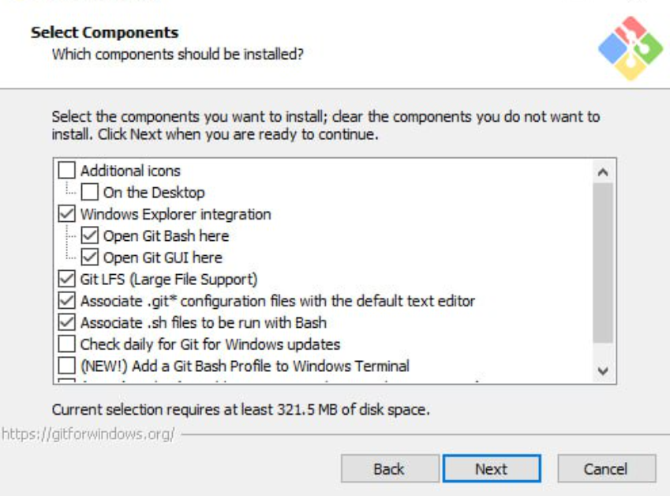
- スタートメニューの設定
- デフォルトで使うエディタの選択 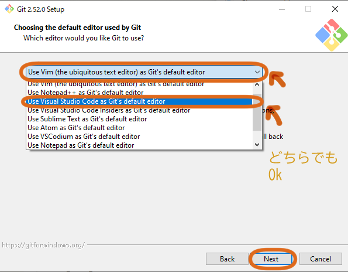
- 初期ブランチ名の決定 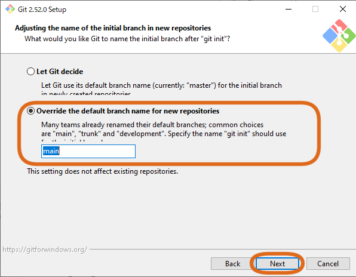
- PATH環境の設定
- HTTPS 通信の設定
- 改行コードの設定 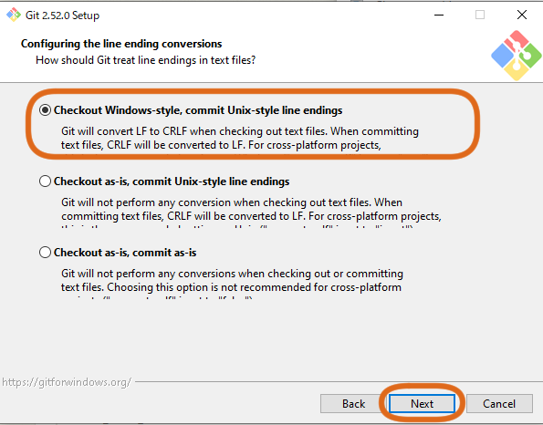
- ターミナルエミュレーターの設定 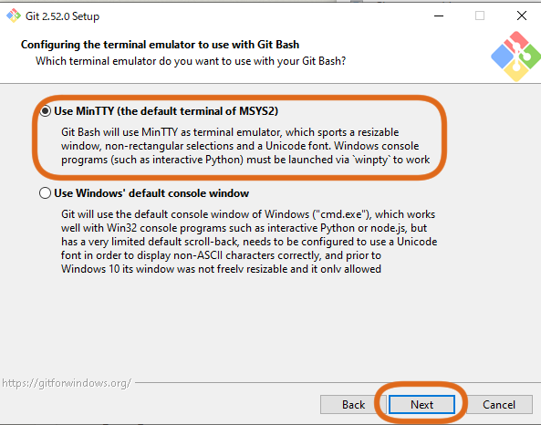
- その他の設定
- 確認方法
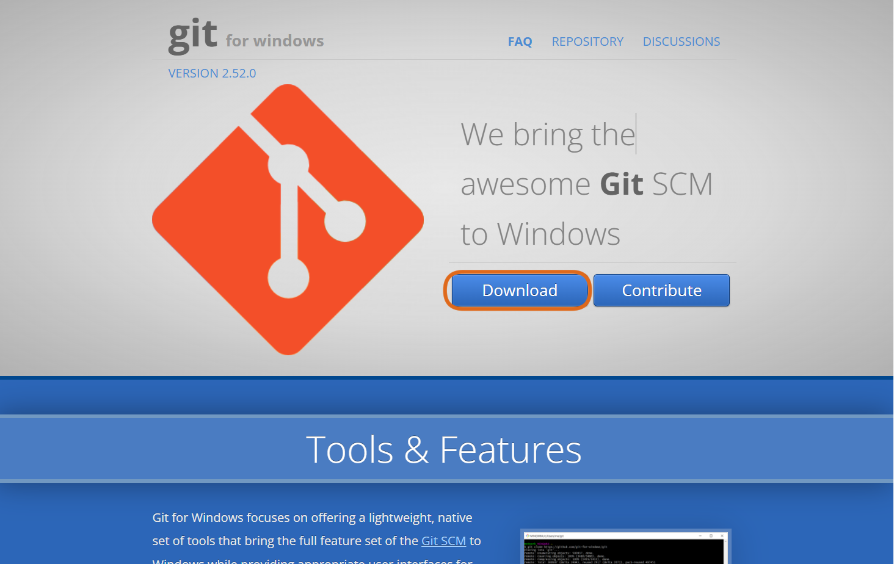 ダウンロードはGit公式サイトから可能です。赤枠で囲った「Download」をクリックして、インストーラーを自身のPCに保存します。
ダウンロードされた.exeファイルをダブルクリックして起動します。「このアプリがデバイスに変更を加えることを許可しますか？」と表示された場合は「はい」を選択してください。
最初にGitをインストールする場所を聞かれます。保存したい場所がある場合はそのフォルダを指定し、特にこだわりが無ければそのまま「Next」を押してください。
次にインストールするコンポーネントの選択画面が表示されます。おびただしい数のチェックボックスが表示されますが、特に変更等を必要としませんので、「Next」をクリックしてください。
これも特に変更する必要ありません。Windowsのメニューの項目にGitの項目を追加するだけです。「Next」を押してください。
コミットで使用するエディタ設定を聞いてますが、特にこだわりがないなら初期設定でも大丈夫です。 しかし、私の場合はWindoesVisualStudioCodeを利用していたので、「Use Visual Studio Code as Git's default editor」を選択しました。
次に最初に作成されるブランチ名を選択します。「Override the default branch name for new repositories」でブランチ名は「main」でOKです。 ブランチについては、「4.Git/GitHubの使い方」で説明します。
次にGitをどこから使えるようにするかを選択します。「Git from the command line and also from 3rd-party software」がおすすめです。
これを選ぶと、VSコードのターミナルなどからもGitコマンドが使えるようになります。
次に、HTTPS 通信で使用するライブラリを選択します。「Use the OpenSSL library」のままで問題ありません。
次に改行コードの扱いについて選択します。おすすめは、「Checkout Windows-style, commit Unix-style line endings」です。これはMac,Windows,Linuxが混在するチーム開発でもトラブルが起きにくくなります。
「Use MinTTY（the default terminal of MSYS2）」を選択して次に進みましょう。
その他、ファイルのキャッシュや認証関連のことを聞かれますが、全てデフォルトでかまいません。完了したら最後に「install」ボタンを押しましょう。完了したら下のような画面が出てくるはずです。
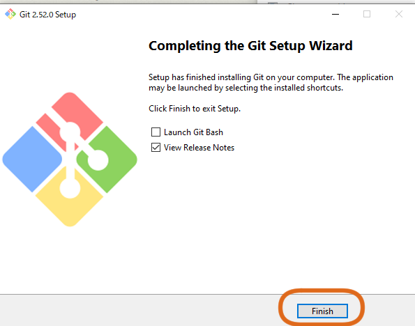完了後、スタートメニューにGit Bash,Git GUIがスタートメニューに追加されているはずです。
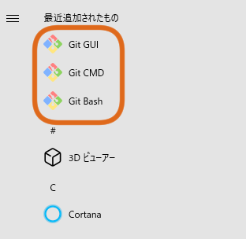念のため、Git が正しくインストールされたか確認します。
「GitBush」を起動して、「git --version」と入力してみましょう。以下のような画面になれば成功です。
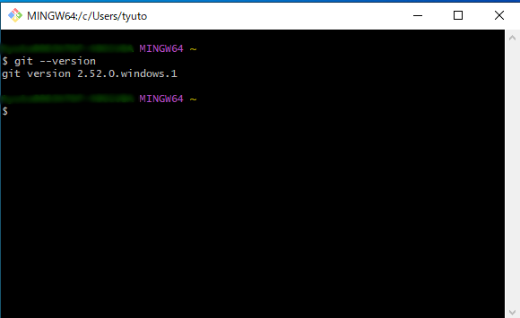3-2.GitHubにアカウント登録をする。
続いて、ギットハブの公式ページに行って、アカウント登録をしましょう。
画面右上「sign up」もしくは、緑色のボタン「sign up for Github」をクリックします。
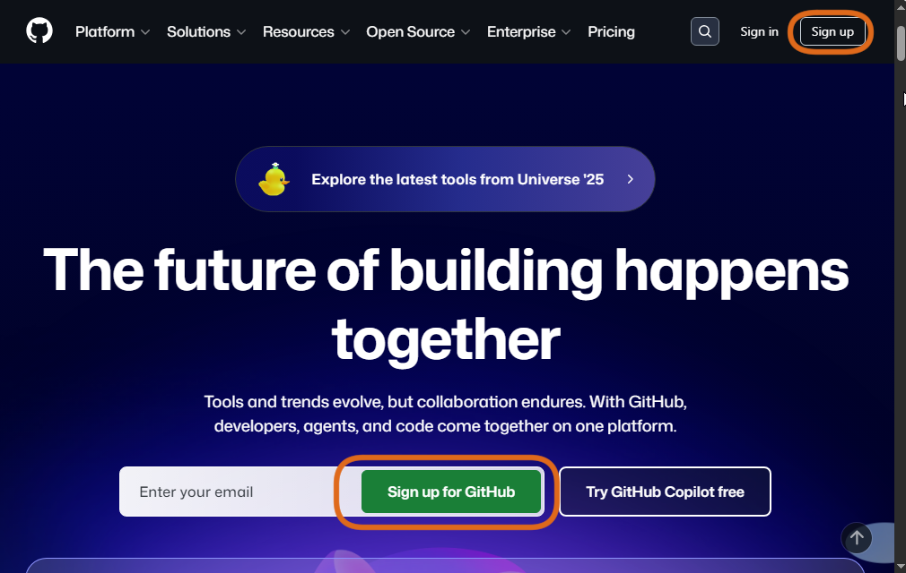
次に、Eメールやパスワード、ユーザーネーム、国籍など設定します。
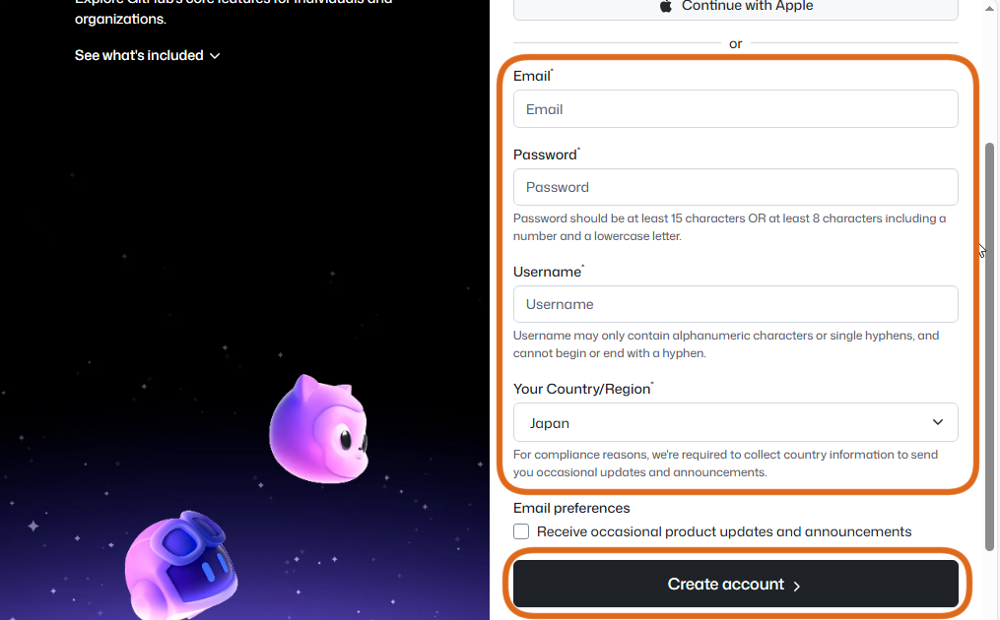
特に、ユーザーネームはGitHub上で公開される名前です。
また、
その後、本人確認、メールアドレスの認証、プランの選択など聞かれます。
登録方法によって少しだけ進み方に違いがあるようなので詳細は省きますが、基本的には指示通り記入していけばログインまで完了できます。
3-3.リモートリポジトリの作成
GitHubのアカウントを作成したら、次はいよいよリモートリポジトリをつくってみましょう！ リモートリポジトリは、
- ソースコードを保管する場所
- チーム開発で共有する場所
- ポートフォリオとして他人に見せる場所
まずは、GitHubログイン後の画面を見てみましょう。左上の「new」ボタンをクリックします。もしくは右上の＋ボタンをクリックし、その後、「New repository」 を選択します。
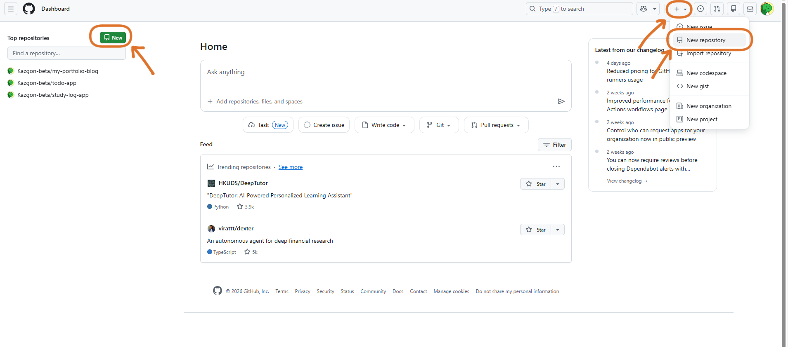
すると、以下のような画面になりますので、「リポジトリ名」を入力しましょう。
リポジトリ名を入力するには、以下のことに気を付けましょう。
- 半角英数字とハイフン（-）で記入する。
- 何を作っているのか分かる名前にする。
- 日本語は使わない。
次は、リポジトリの説明（Description）を書きましょう。 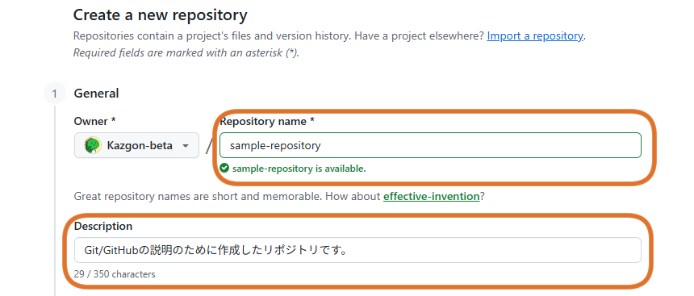 これは、空欄でも問題ないのですが、簡単な一文を書いておくと親切かと思います。
次に、リポジトリの公開範囲の選択を行います。
- public・・・誰でも閲覧可能
- private・・・自分（または許可をした人）が閲覧可能

次に、READMEファイルを作成するかですが、基本的にチェックを入れることをお勧めします。
ここにチェックを入れておくと、READMEファイルが自動的に作成されます。READMEは
- このリポジトリが何のためのものか
- どんな内容が入っているか
最後に.gitignore と License の選択ですが、これは両方ともチェックしなくても良いです。
少し調べましたが、
- .gitignore・・・特定のファイルをGitから除外する設定
- License・・・ソースコードの利用条件を決めるもの（ライセンス）
ここまで出来たら一番下の「Create repository」をクリックして、リモートリポジトリが完成します。
3-4.ローカルリポジトリを作成する。
次に、ローカルリポジトリの作成に入ります。先ほどダウンロードした「GitBush」を使いコマンド操作を行います。 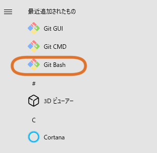
まずはローカルリポジトリを置きたいフォルダへ移動します。例えば、Documentsフォルダに作成したい場合は
と入力します。cdの後に、移動したいフォルダ名を書いてください。
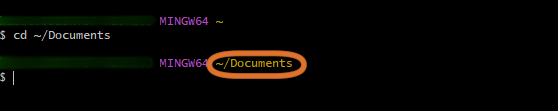
「Documents」の部分は任意のフォルダ名にしてください。どんなフォルダがあるか分からない場合は
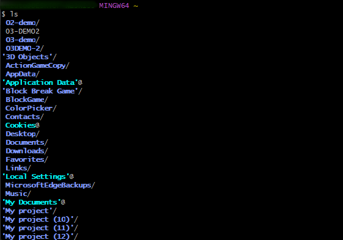
と打つと一覧で出てきます。これらはGitコマンドと言って、Linuxのような感覚でコマンド操作を行うことができます。 そもそも、Linuxの開発者とGitの開発者は同じ方だそうで、そういったところも面白いですね。気になる方はぜひ調べてみて下さい。
話が逸れましたが、続きを説明していきます。
続いて、GitHubへアクセスし、先ほど新しく作成したリポジトリのページへ行きます。緑色の「Code」ボタンをクリックし、URLの横の四角をクリックします。
するとURLがコピーされます。 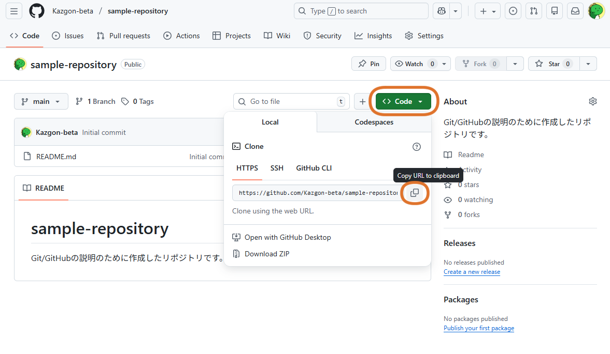
そしてまたGitBushに戻ります。次は、
を実行しましょう。「https://～・・・」の部分は先ほどコピーしたURLを貼り付けるとできます。
- 貼り付け方はマウスホイールがある方はそれをクリックしてください。
- ない方は、Shift+Insで貼り付けましょう。
ここまでできれば、以下のような状態だと言えます。
- リポジトリ名のフォルダが作成される。
- 中にREADMEが入っている。
- すでにGitに管理されている。
4.Git/GitHubの使い方
ブランチ
ここまで来たら、いよいよGit/GitHubを利用した開発を体験してみましょう。 まずは、
ブランチとは、
これにより、機能追加やバグ修正、ファイルやディレクトリの変更など、様々な作業が同時進行できるのです。 ブランチは色々と別れていきますが、ブランチで施した変更を最終的に1つのブランチにまとめて完成させます。 この最後にまとめるブランチのことを
少し前のGitBushを利用した時の画像を見てみましょう。コマンドを記入した欄の上に（main）と書かれています。
これは現在「mainブランチ」で作業しているということを示しています。
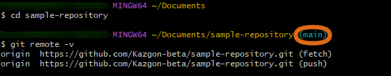
これでは、ローカルでひたすら作業しているのと大きく変わらないので、ブランチを作り変更の記録が残るようにします。 開発環境では、
mainは触らない。作業はブランチで行う。
がルールです。
ブランチは、
- feature/○○○:新機能を実装
- fix/○○○:バグを修正
- docs/：ドキュメント（READMEなど）
- refactor/：動きは変えず内部整理
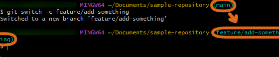
（もちろん、somethingなんて名前はやめた方がいいですが、今回は試しなので・・・）
ローカル作業
ブランチができたので、実際にローカルリポジトリに変更を加えてみましょう。
このあたりは私と同じようにしなくても大丈夫ですが、せっかくBushをダウンロードしたのでコマンドを使ってhtmlファイルを作成してみましょう。
と入力して実行すると、今いる場所が表示されます。
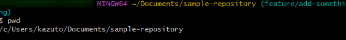
リモートと紐づけされたローカルリポジトリにいることを確認できたら、
と入力してみましょう。すると、真っ黒の画面が立ち上がります。これは、Bushに標準搭載されているnanoというアプリケーションが立ち上がっている状態です。 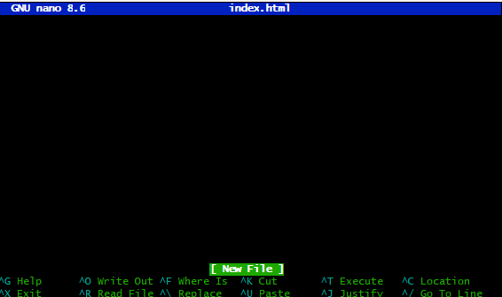
ここに適当にhtmlを打ち込んでみます。良ければコピペして使ってください。 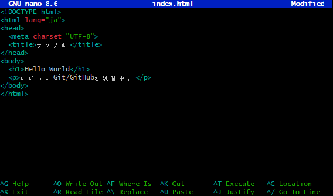
<!DOCTYPE html>
<html lang="ja">
<head>
<meta charset="UTF-8">
<title>サンプル</title>
</head>
<body>
<h1>Hello World</h1>
<p>ただいまGit/GitHubを練習中。</p>
</body>
</html>
一応、きちんとデータがあるか確認します。lsと打てば一覧が出るのでした。 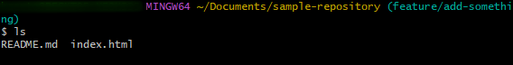 さらに、書いたものが動くかどうか確かめておきましょう。Bushに
を入力すると、既定のブラウザでhtmlファイルが読み込まれます。
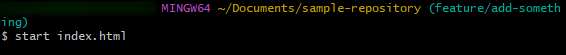
きちんと動いていることが確認できました。
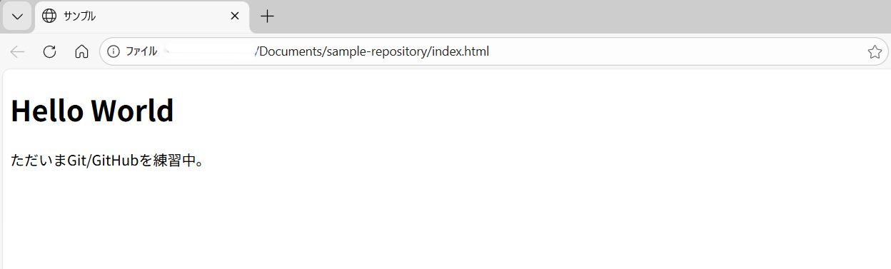 次は「ステージング」をしていきます。
ステージング
まず、変更状況を見るところから始めましょう。
Bushで
全てステージングするなら、
特定のファイルだけステージングするなら、
今回はgit add index.html として、先ほど作ったhtmlファイルをステージングします。 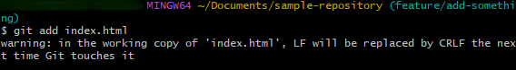
注意（Warning）が出ていますが、今回は無視して構いません。
今、玄関にindex.htmlを置いたようなイメージを持ってもらうと良いかと思います。
コミット
次は、ステージングした変更を確定するために「コミット」しましょう。
Bushに以下のようなコマンドを打ち込みましょう。
""の中はコメントです。第三者が見ても分かるように何をしたのかを書きます。 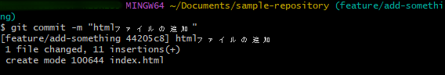
プッシュ
次はローカルにあるコミットをGitHubに送ります。Bushで以下のように打ちましょう。
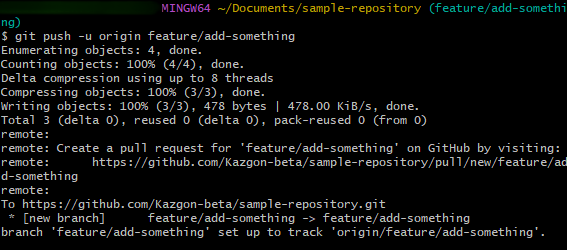 少し長いですがこれは最初だけで、 次回から、同じリポジトリ内での変更は
プルリクエスト
GitHubのリポジトリへ行くと、「Compare & pull request」のボタンが表示されています。そこからプルリクエストを作成します。
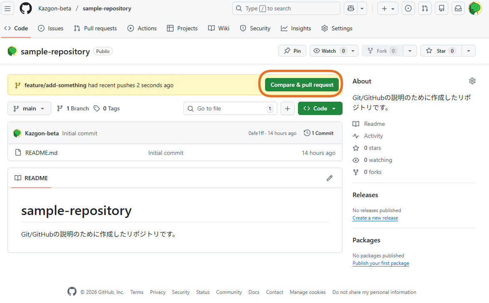
プルリクエストでは以下のようなことを書くのが良いのではないかと思われます。
- 概要：何をしたのか。
- 目的：なぜ必要なのか。
- 確認方法：どう動作確認をしたか。
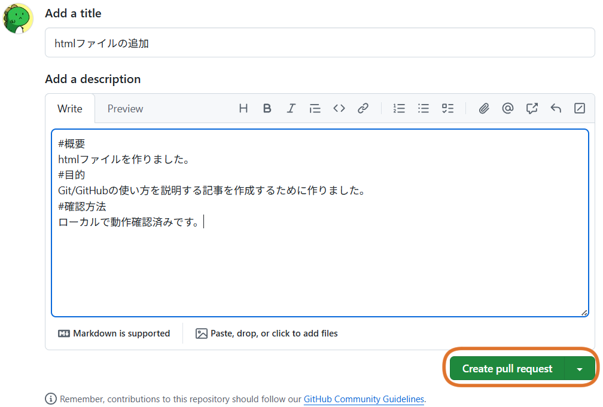
書けたら、画面下「Create pull request」をクリックしましょう。
レビューが返ってきたら修正をする。
チーム開発ではPRを出すとレビューが返ってきます。
その時は内容を確認し、
- ローカルで修正する
- git add ファイル名
- git commit -m "コメント"
- git push
マージ
一人開発では自分でマージをしますが、チーム開発では基本的にレビュー担当者やリーダーがマージをします。
やり方はGitHubに表示されている「Marge pull request」→「Confirm merge」を押しましょう。
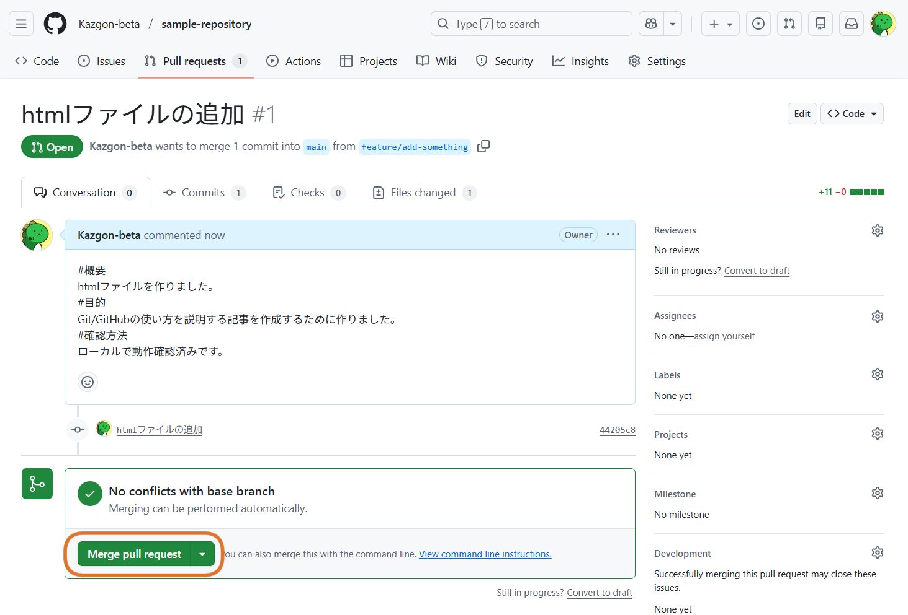
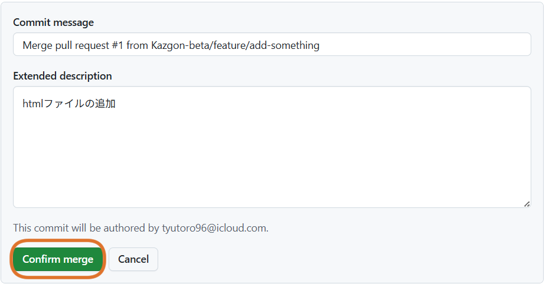
もう必要なければ今作業していたブランチも消します。「Delete branch」を押しましょう。
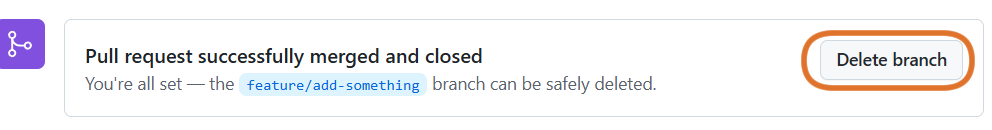
プル
マージされたら、自分のローカルmainを最新の状態にしましょう。まず、ブランチをmainに切り替えます。Bushで、
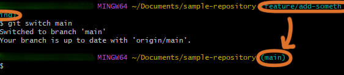
これでmainブランチに戻ってきました。
今の状態で、
先ほどまで作業していたのは別のブランチでのことです。なので、
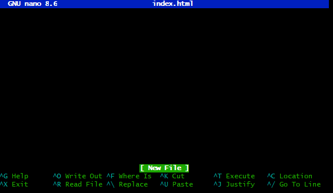
しかし、リモートのmainブランチには、先ほどの作業の記録がマージされているはずです。そこで、今度はリモートのmainブランチから記録をプルしてみましょう。
Bushのコマンドは
です。
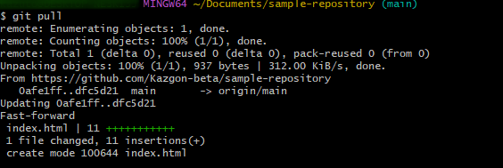
正常にプルできているのか、確認してみましょう。再び、
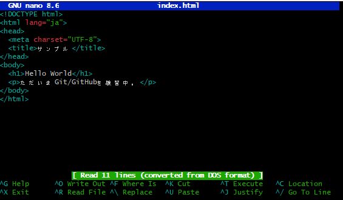
先ほど書いたhtmlコードがきちんと記録されています。
おわりに
実際に手を動かさないと分からないことも多く、概念も難しかったですが、なぜGit/GitHubが開発の現場で支持されているのか理由がわかったように思います。 一人開発では正直寂しさもありますが、
- ブランチ運用
- プルリクエスト
- レビューを意識したコード
これからGit/GitHubを利用したいという方の参考になれば幸いです。